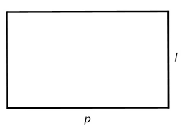

Bangun Datar
Bangun datar adalah bangun yang mempunyai permukaan datar dan dua dimensi yaitu panjang dan lebar. Ada 8 bangun datar yang akan dipelajari di materi kali ini
Jenis Bangun Datar
- Persegi
- Persegi Panjang
- Segitiga
- Jajargenjang
- Trapesium
- Belah ketupat
- Layang-layang
- Lingkaran
Persegi
Persegi adalah suatu bangun datar 2 dimensi yang dibentuk oleh 4 buah rusuk yang memiliki ukuran sama panjang. Dan juga memiliki 4 buah sudut siku – siku.
Rumus Persegi
| Dicari | Rumus |
|---|---|
| Luas persegi | Sisi x Sisi |
| Keliling | 4xsisi |
Contoh soal

Jika Setiap sisi persegi memiliki panjang 5cm berapakah luas dan keliling
Luas=sisi x sisi
L=5x5=
25cm²
Keliling=4xsisi
K=4x5
20cm
Jadi luas dari persegi adalah 25cm² dan kelilingnya adalah 20cm
Persegi Panjang
Persegi panjang adalah bangun datar 2 dimensi yang dibentuk oleh 2 buah pasang rusuk yang panjang serta sejajar
Rumus Persegi Panjang
| Dicari | Rumus |
|---|---|
| Luas persegi panjang | panjang x lebar |
| Keliling | 2x(panjang+lebar) |
Contoh soal
Jika p adalah 8cm dan l adalah 4 cm, maka tentukan luas dan kelilingnya
Luas=panjang x lebar
L=8x4
32cm²
Keliling=2x(panjang+lebar)
K=2x(8+4)
K=2x12
24cm
Jadi luas dari persegi adalah 32cm² dan kelilingnya adalah 24cm
Segitiga
Segitiga adalah suatu bangun datar yang dibentuk oleh 3 buah sisi yang berupa garis lurus serta memiliki 3 buah sudut.
Rumus Segitiga
| Dicari | Rumus |
|---|---|
| Luas Segitiga | ½xAlasxTinggi |
| Keliling | A+B+C |
Contoh soal

Jika T adalah 12cm, A adalah 8 cm, b&c 9cm,maka tentukan luas dan kelilingnya
Luas=½xAlasxTinggi
L=½x8x9
36cm²
Keliling=a+b+c
K=8+9+9
26cm
Jadi luas dari persegi adalah 36cm² dan kelilingnya adalah 26cm
Jajar genjang
Jajar genjang adalah bangun datar 2 dimensi yang dibentuk atas 2 buah pasang rusuk yang sama panjang.
Rumus Jajar genjang
| Dicari | Rumus |
|---|---|
| Luas Jajargenjang | AlasxTinggi |
| Keliling | 2x(A+B) |
Contoh soal

Jika T adalah 10cm, A adalah 8 cm, dan b 6 cm,maka tentukan luas dan kelilingnya
Luas=AlasxTinggi
L=10x8
80²
Keliling=2x(a+b)
K=2x(8+6)
K=2x16
32cm
Jadi luas dari persegi adalah 80cm² dan kelilingnya adalah 32cm
Trapesium
Trapesium adalah bangun datar 2 dimensi yang dibentuk dari 4 buah rusuk. 2 rusuk di antaranya saling sejajar namun panjang nya tidak sama.
Rumus Trapesium
| Dicari | Rumus |
|---|---|
| Luas Trapesium | ½ × (a+b) × t |
| Keliling | A+b+c+D |
Contoh soal

Jika T adalah 8cm, bc(A) adalah 6 cm, ad(b) 12 cm,cd(c) 10cm, dan ab(D) 9cm ,maka tentukan luas dan kelilingnya
Luas=½ × (a+b) × t
L=½ × (6+12) × 8
½ × 18 × 8
72²
Keliling=a+b+c+d
K=6+12+10+9
37cm
Jadi luas dari persegi adalah 72cm² dan kelilingnya adalah 37cm
Belah ketupat
TBelah Ketupat adalah bangun datar 2 dimensi yang dibentuk oleh 4 buah sisi yang sama panjang.
Rumus Belah ketupat
| Dicari | Rumus |
|---|---|
| Luas Trapesium | ½ × d1 × d2 |
| Keliling | 4xsisi |